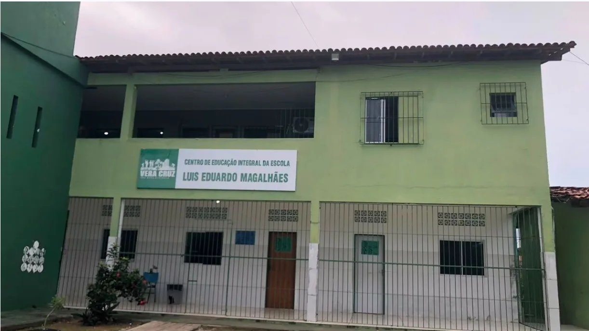
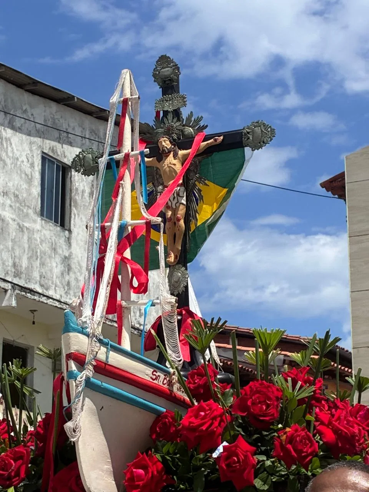
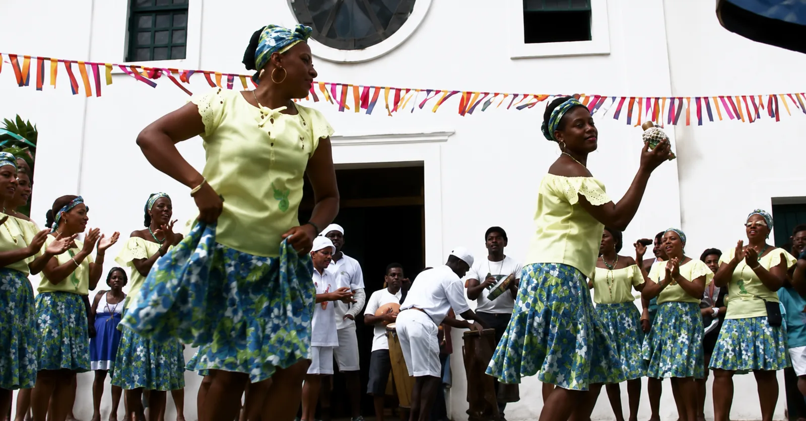
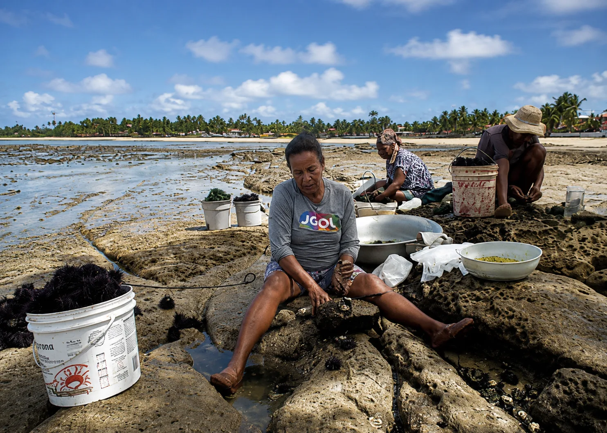
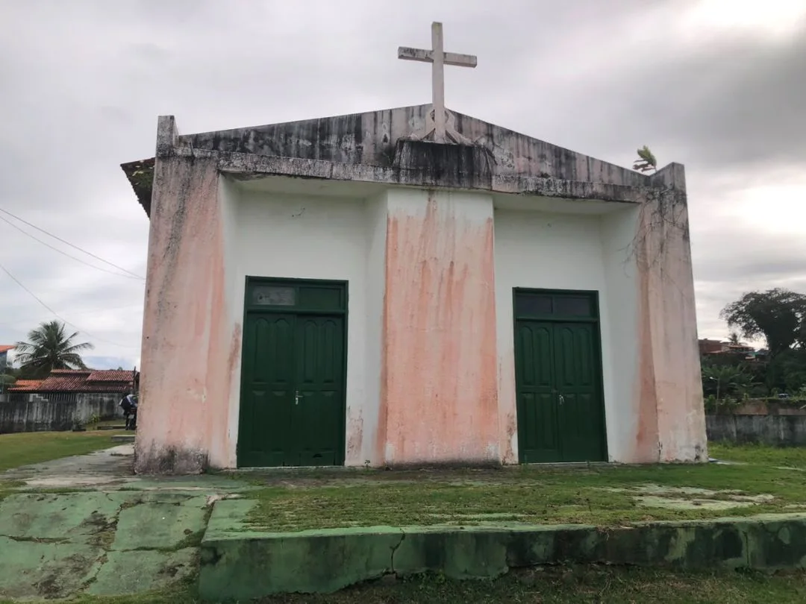
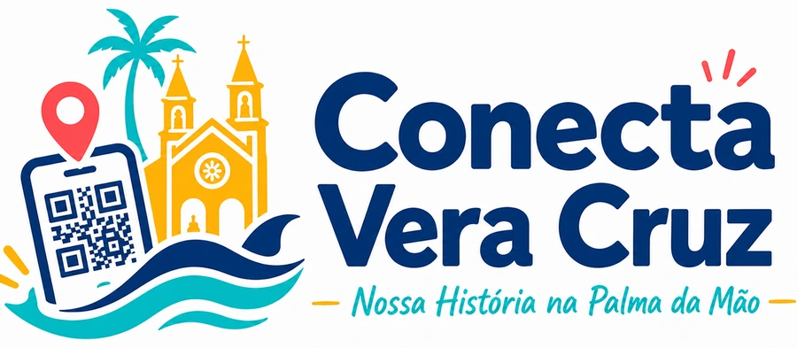

Educação, território e pertencimento
Uma escola que ensina a conhecer o lugar onde vivemos
Na comunidade da Gamboa, a Escola Municipal Luís Eduardo Magalhães transforma o cotidiano em fonte de conhecimento. O mar, a fé, a cultura popular, o trabalho e as memórias dos moradores entram na sala de aula e ajudam a contar quem somos.
O Conecta Vera Cruz nasceu desse encontro entre escola e comunidade: estudantes pesquisam o território, registram histórias e compartilham o conhecimento por meio de páginas digitais e códigos QR.

Uma construção coletiva
01
Antes da abertura
02
31 de julho de 1986
03
Novos caminhos
04
Conecta Vera Cruz
Uma história construída por muitas mãos
A escola cresce quando alunos, profissionais, famílias e comunidade reconhecem que aprender também é cuidar do lugar onde se vive.
Nasce uma ideia
Surge a proposta de construir um espaço próprio para acolher as crianças e fortalecer a educação na comunidade.
A escola abre as portas
A unidade é inaugurada na Rua 28 de Maio, na Gamboa, iniciando uma trajetória de formação e pertencimento.
A escola amplia horizontes
Com apoio da comunidade e de parceiros, novas etapas de ensino passam a fazer parte da vida escolar.
Educação que conecta
Os estudantes transformam pesquisa, memória e tecnologia em páginas que valorizam Vera Cruz e suas comunidades.
A Gamboa também é sala de aula
O território ensina com vozes, ritmos e marés
Cada tradição guarda uma aula viva. Ao pesquisar a comunidade, os estudantes percebem que patrimônio não é apenas o que está nos livros: também está nas festas, nos ofícios, nos gestos e nas lembranças.

Fé e devoção
Tradições que navegam pela memória
As celebrações religiosas reúnem moradores, embarcações, música e devoção, ligando a vida da comunidade ao mar.

Cultura popular
O samba de roda mantém a história em movimento
Corpo, canto, palmas e instrumentos transformam a praça em arquivo vivo, onde cada geração aprende com a anterior.

Saberes do mar
A mariscagem transforma experiência em conhecimento
Observar a maré, reconhecer os lugares de coleta e transmitir técnicas são saberes construídos no cotidiano.

Do caderno para o mundo
01
02
03
Os alunos deixam de ser apenas leitores e se tornam autores
No Conecta Vera Cruz, aprender História significa investigar, escolher fontes, ouvir diferentes vozes e produzir conteúdo público com responsabilidade.
Pesquisar
Ouvir moradores, observar o território e consultar documentos, fotografias e relatos.
Criar
Produzir textos, imagens, vídeos, mapas e páginas digitais com linguagem acessível.
Compartilhar
Levar o conhecimento à comunidade por meio da internet e dos códigos QR.

Nossa história continua sendo escrita
Escaneie. Conheça. Valorize. Preserve Vera Cruz.
Projeto desenvolvido pelos alunos da Escola Municipal Luís Eduardo Magalhães, sob orientação da professora Danusa Jesus.
Explore as comunidades →